Best seller
Best sellerSaffron tahchin
Tarom rice, full-fat yogurt and Qaenat saffron, steamed for four hours over a low flame with barberries and pistachios.
$2520 min
Sofreh is Davood Sadr’s kitchen, where old Tabriz family recipes come alive over charcoal and in copper pots, with the techniques of a modern kitchen.

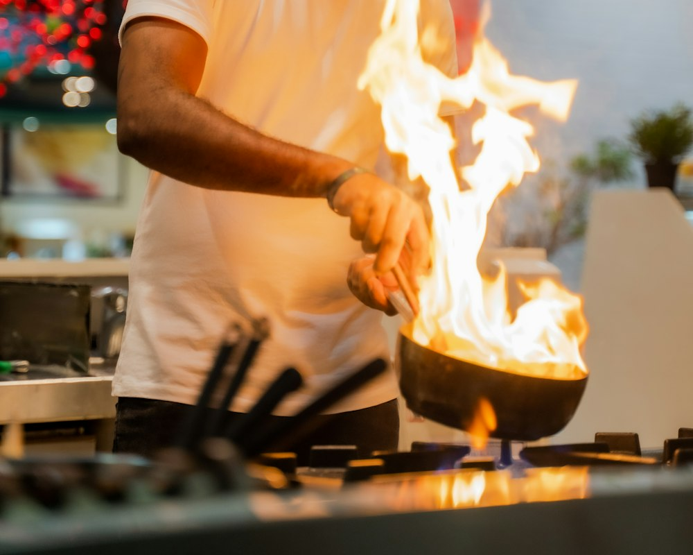
I took my first cooking lesson in my grandmother’s kitchen in Tabriz, where the air always smelled of saffron and cinnamon. Later I trained in French cuisine and worked in kitchens in Paris and Istanbul.
In 2013 I opened Sofreh to serve those home-cooked flavours with the precision of a professional kitchen. Our menu changes every season, but grandma’s tahchin and fesenjan never leave it.
These are the three dishes our guests ask for more than anything else.
Best sellerTarom rice, full-fat yogurt and Qaenat saffron, steamed for four hours over a low flame with barberries and pistachios.
 Over charcoal
Over charcoalBeef fillet and chicken thigh marinated in saffron and onion, grilled over orange-wood charcoal.
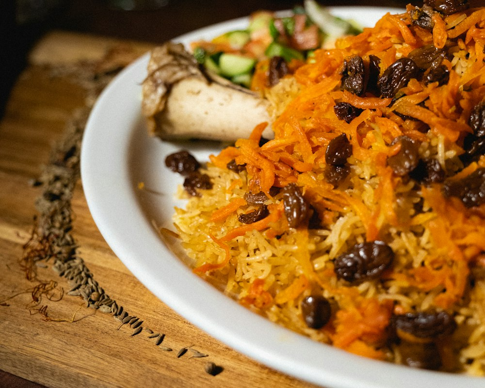
For celebrationsQazvin’s “jewelled rice” with slivered pistachios and almonds, orange peel, barberries and saffron carrots.
Prices are in US dollars and include VAT.

Charcoal-smoked eggplant, strained yogurt, pomegranate seeds and mint oil
Vegetarian
Local yogurt, cucumber, rose petals, raisins and fresh mint
Vegetarian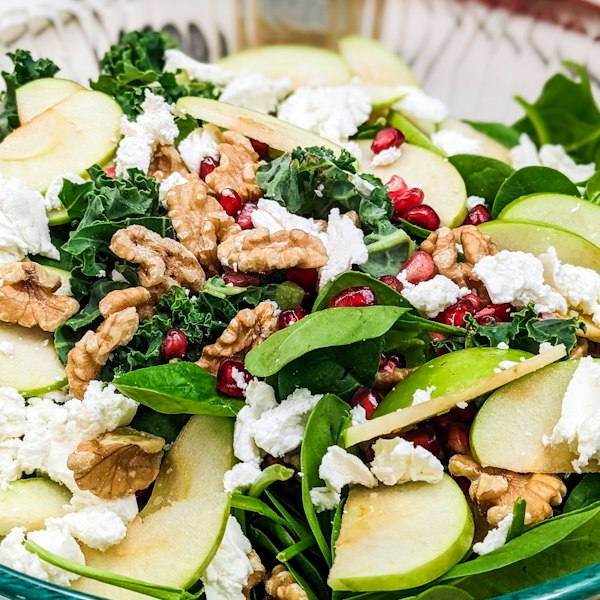
Fresh spinach, tart apple, caramelized walnuts and Lighvan cheese
Chef’s pick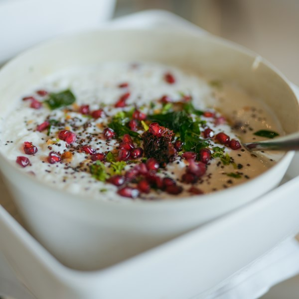
Azerbaijani ash-e doogh with fragrant herbs, chickpeas and pomegranate seeds
Tabriz recipe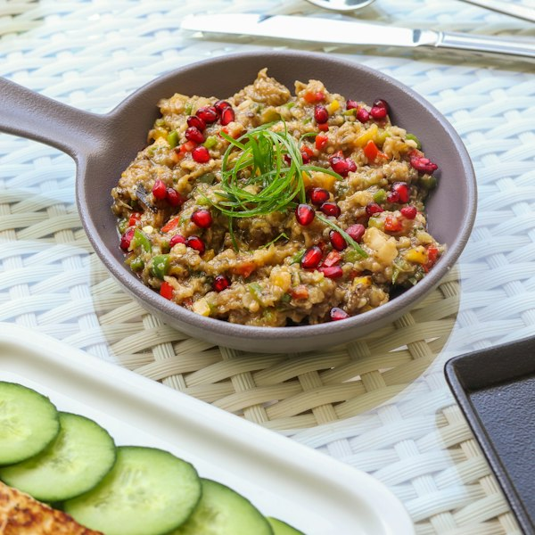
Green lentils, red onion, parsley, pomegranate and verjuice dressing
Vegetarian
One skewer of koobideh, one of saffron chicken, grilled tomato and taftoon bread
Over charcoal
Two skewers of lamb koobideh, buttered rice, grilled pepper and tomato
Classic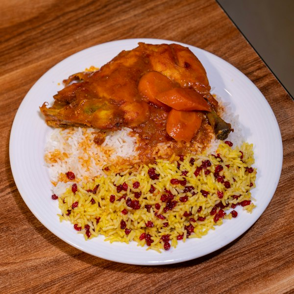
Slow-cooked chicken thigh in tomato and saffron, buttered barberries and pistachios
Chef’s pick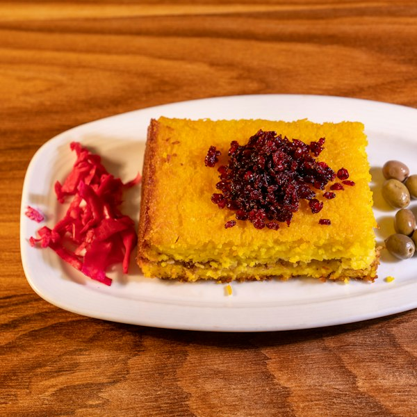
Crispy tahchin with chicken fillet, yogurt, saffron and barberries
Popular
Catch of the day from Bandar Abbas, herbed rice, lemon and red onion
Catch of the day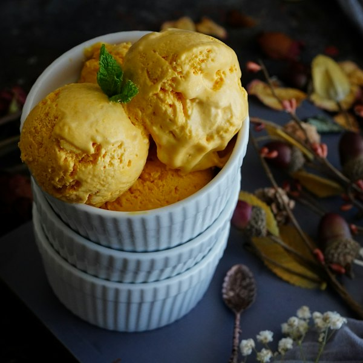
Handmade ice cream with saffron, rosewater, frozen cream chunks and pistachios
Handmade
Rice-flour pudding with local milk, Kashan rosewater and rose petals
Vegetarian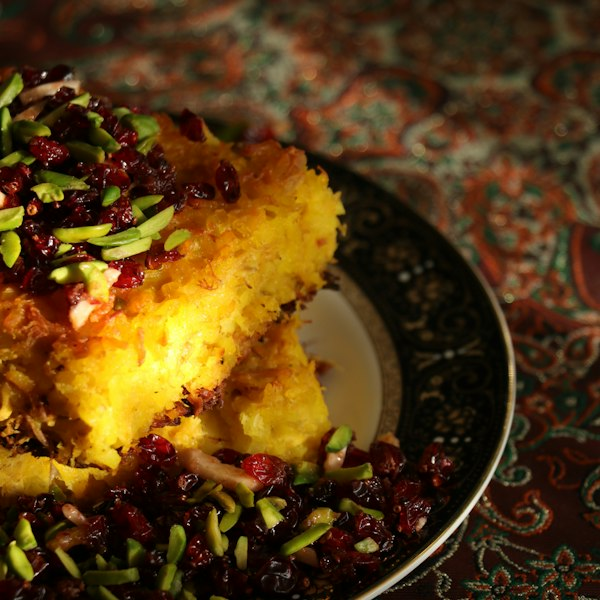
Syrup-soaked saffron cake with cardamom, pistachios and barberries
Chef’s pick
Layers of sponge cake, pistachio cream and ground Rafsanjan pistachios
Fresh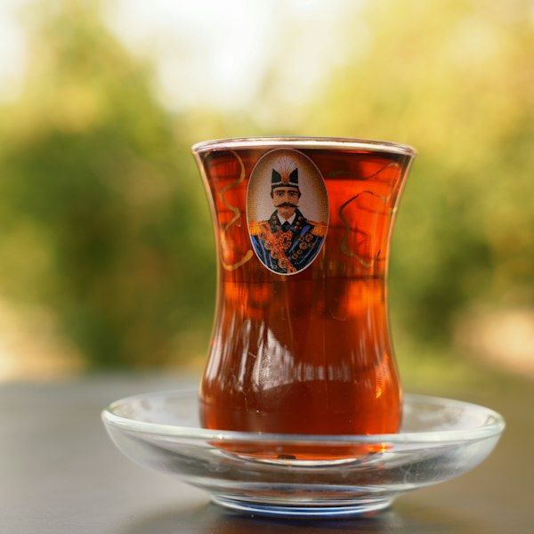
Lahijan tea brewed in a samovar, served with saffron rock candy
DrinkThursday and Friday nights, for just eight guests. Davood Sadr prepares every plate in front of you and tells you its story.
We work with small farmers and producers so every flavour is rooted in its own place.


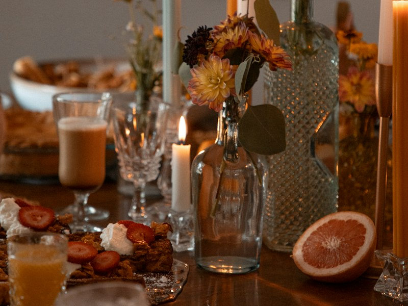
A bespoke menu cooked in your home for parties of 6 to 20 guests.
Enquire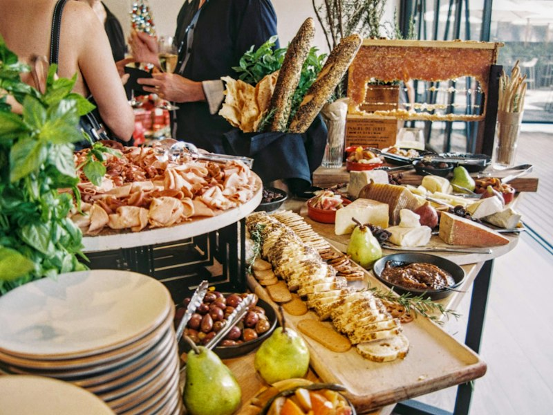
Persian catering for celebrations, conferences and corporate events of up to 300 guests.
Enquire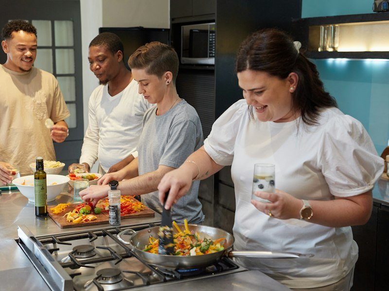
Hands-on one-day workshops: rice and tahdig, kebabs and classic stews.
Sign up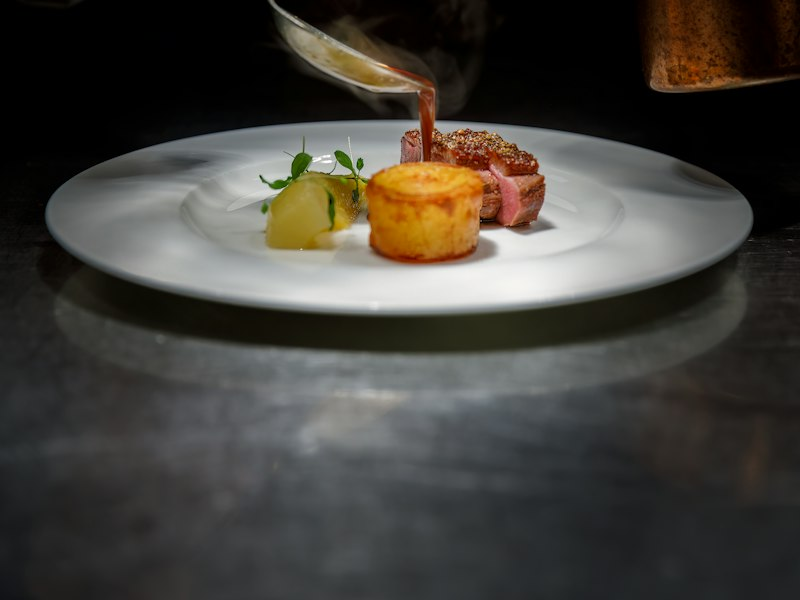
Menu design, recipe standardization and kitchen team training.
Enquire“One of Tehran’s ten best restaurants; don’t leave without trying the tahchin.”
Travel & Taste Magazine
“Persian cooking with the precision of an international kitchen.”
Shahr Daily
“Gold medal at Iran’s national culinary festival, traditional cuisine category.”
Iran Culinary Festival 2024
After three months of consulting, our menu became shorter and sharper, and our ingredient costs fell by 18%.

I took Mr Sadr’s tahdig class with my daughter. Now the tahdig at our house comes out golden and even every time!

Please book at least three days ahead for weekends. Tables are held for 15 minutes after the booking time.
Try out colours and display modes.
Primary colour Display mode